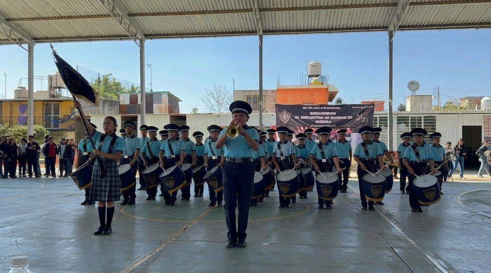
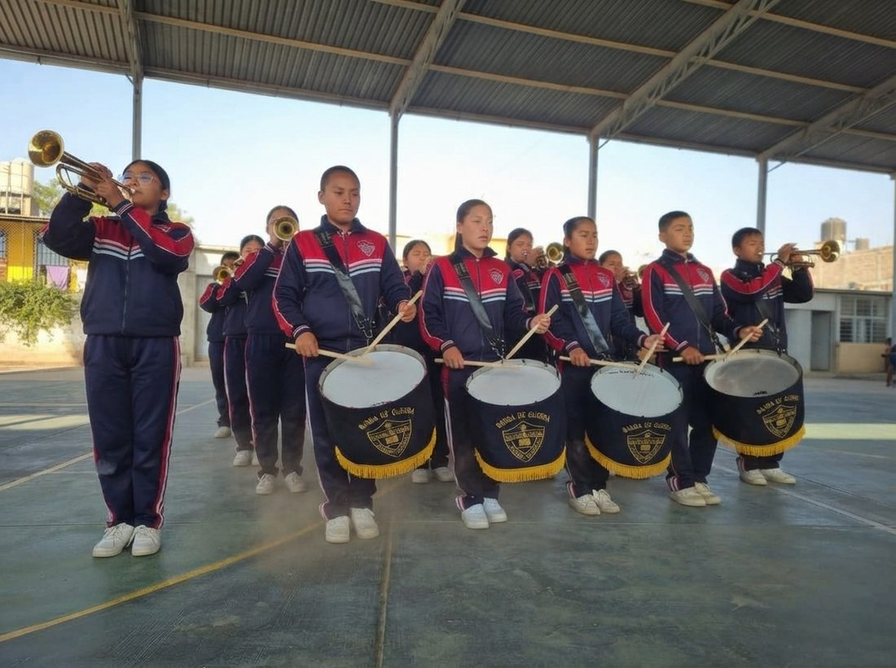
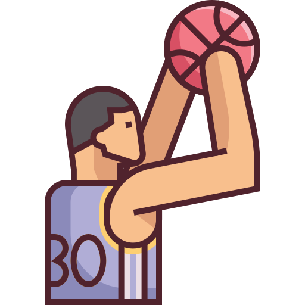
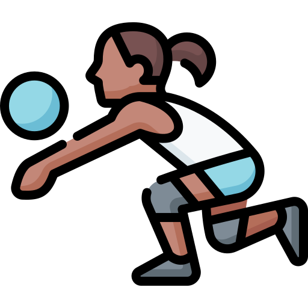
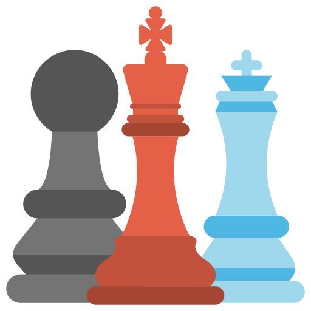

Fuera del salón de clases
Vida estudiantil y actividades extraescolares
La formación en la 21 de Noviembre continúa después de clases, con disciplina, trabajo en equipo y orgullo por representar a la escuela.
Banda de Guerra
Nuestra Banda de Guerra representa a la escuela en desfiles y actos cívicos, y es un espacio donde las y los estudiantes desarrollan disciplina, orden y trabajo en equipo.



Basquetbol
Equipo escolar que compite en los torneos de la zona.

Futbol 7
Entrenamientos y participación en el calendario deportivo escolar.

Voleibol
Selección femenil y varonil que representa a la institución.

Ajedrez
Nuevo proyecto escolar que desarrolla concentración, estrategia y pensamiento lógico.
Nuestros equipos participan en los eventos deportivos de zona escolar en las tres disciplinas.